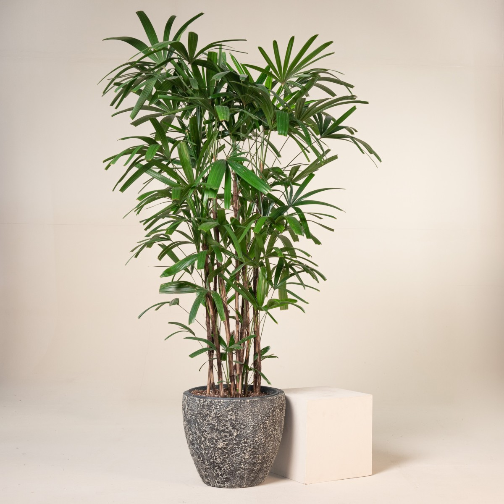
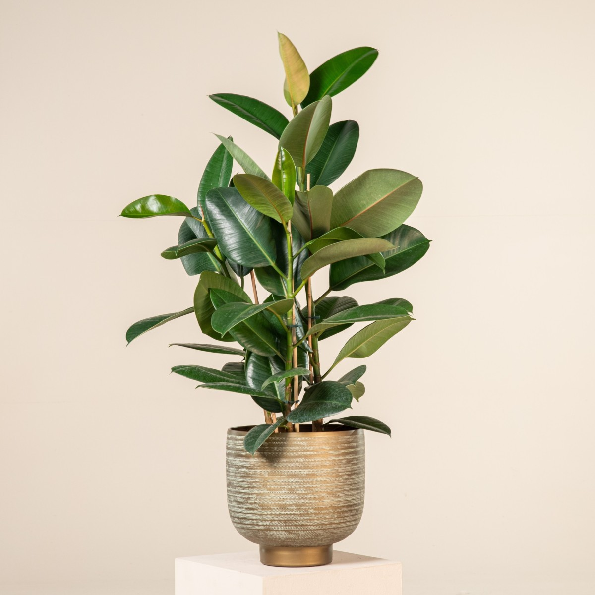

schefflera-arboricola
Schefflera, commonly called umbrella plants or trees, make excellent tropical houseplantsThese easy-growing plants can live 25 years or longer and produce flowers, but plants grown indoors rarely develop flowers. Schefflera grows best in indirect, filtered light, requiring a rich, loamy, well-draining soil and temperatures consistently warmer than 60°F. All parts of the schefflera plant are mildly toxic to humans and seriously toxic to dogs and cats.
Peperomia Obtusifolia
The baby rubber plant (Peperomia obtusifolia) is a compact, low-maintenance, tropical plant grown mostly for its glossy, spoon-shaped, fleshy, dark green or variegated foliage. It occasionally blooms nondescript, small, whitish-green flowers. Peperomia obtusifolia grows best in low-light or indirect bright light, in loose, moist soil, and thrives in high humidity.
Asplenium Nidus
Bird's nest ferns (Asplenium nidus) grow on the surface of other plants in their natural rainforest habitat. These kinds of plants are called epiphytes, and because they typically grow on other plants, they are not connected to the soil; this means that they derive most of their nutrients from other sources like water or composted soil.
Maranta Leuconeura
The prayer plant (Maranta leuconeura) is one of the most distinguishable tropical houseplants thanks to its beautiful decorative foliage. It gets its common name from its leaves, which stay flat during the day and then fold up like praying hands at night.Those looking for a pet-safe plant will be happy to hear that prayer plants are considered non-toxic to both pets and humans.
Scindapsus Pictus
Satin pothos plants have heart-shaped leaves with silvery grey splotches, which makes them look almost shiny and adds to the visual appeal of the plant. The intensity of the variegation depends on the cultivar.Satin pothos is a vine that will latch onto its surroundings—moss pole, a trellis, other plants, a wall, or a piece of furniture—growing quickly. Instead of letting it climb, you can also grow satin pothos in a hanging planter, allowing its foliage to cascade down.The plant is toxic to pets.
Alocasia Amazonica
These plants are primarily grown in the U.S. as houseplants with containers sometimes set outside on patios in summer or planted directly in the garden, but, in either case, brought indoors in fall before first fall frost date for overwintering indoors.Plants in the genus Alocasia are best grown in part shade, filtered sun or bright indirect light in consistently moist, organically rich, well-drained soils in high humidity locations protected from strong winds. Air temperatures should not dip below 60°F. If grown in direct sun, leaf burn and pale foliage may result.
Monstera Adansonii
The Swiss cheese plant (Monstera adansonii) gets its common name from its large, heart-shaped leaves that develop holes as the plant ages, making the leaves resemble Swiss cheese. It can be trained to grow up a moss poll, but it looks great when left on its own to grow long vines. Kept as a houseplant, it'll grow to between 3 and 8 feet long; in its native habitat, it can grow up to 13 feet.It's important to note that all parts of Monstera plants are toxic to pets, so be careful when growing them indoors.
Dypsis lutescens
Dypsis lutescens commonly known as the Golden Cane Palm, this is a decorative and hardy clumping palm well suited to adding a tropical feel to gardens and patios. Golden Cane palms prefer a warm position, with full sun to full shade, protected from afternoon sun to look their best. Also suited to very bright and airy positions indoors with good circulation. For enhanced growth we recommend using Troforte M Indoor & Patio Slow Release fertiliser at half the recommended application rate. The Golden Cane palm reaches 6-8m height and 2-2.5m width

Rhapis Excelsa
Rhapis Excelsa also known as Lady palms,are clustering palms that produce individual stems along underground rhizomes. When planted in the ground, the stems are not produced in a tight cluster, giving the impression of a copse of small palms. The fiber-covered stems are slender and support a crown of several palmately compound leaves.This is an easy-to-grow houseplant that is also popular in commercial interiorscapes. Potted specimens will happily spend their summers outside, in a shady spot on the patio. They must be brought when the temperature threatens to drop below 50 degrees Fahrenheit, as they are tender, tropical palms.

Spathiphyllum Wallisii
Keeping peace lilies in your home is more than just a decorative choice — it’s a step towards a healthier, more serene living environment.Whether you’re drawn to their air-purifying qualities, low-maintenance care, or beauty, peace lilies are a wonderful addition to any indoor space.
Platycerium Bifurcatum
Platycerium bifurcatum, the Elkhorn fern is an epiphyte, growing on the trunks and branches of trees. Each plant is composed of a mass of plantlets. A plantlet consists of a nest leaf 12-30 cm wide, lying against the bark of the host tree. The nest leaves of neighbouring plantlets overlap one another. The nest leaves become brown and papery with age, and do not produce spores (they are sterile).P. bifurcatum plants require a shady area to grow in, and need to be kept moist. They are not prone to attack from many pests and insects, but may be preyed upon by scale bugs and mealy bugs. These pests may be removed from the plant by scratching them off. Ladybirds will eat these pests, and so may help to control them.

Dracaena Marginata
Dragon tree (Dracaena marginata), is a tall plant with green, sword-like, red-edged leaves. Native to Madagascar, the eye-catching spiky tree is a great entry plant for household gardeners wanting an indoor tree—it's easy to care for, drought-tolerant, and nearly indestructible.This slow-growing tree can take a decade to reach a few feet tall but can eventually grow to about 20 feet. However, it is generally grown as a potted houseplant and kept pruned to 6 feet or less.Keep the dragon tree away from pets because it's toxic to animals if ingested.
Anthurium Andraeanum
An easy to care houseplant with large, thick, glossy elongated, heart-shaped leaves. They produce long-lasting colourful spathes (flowers) in the warmer months of the year that almost look plastic. This plant is very well suited to growing in a hydroponic-like set up in a vase or large glass container. They get pink and red roots which make them very interesting to grow in this manner.Anthuriums need high indirect light levels to flower. Place plants as close to a window as possible without allowing any direct sun. In cooler climates they will tolerate winter sun.

Ficus Elastica
Rubber tree (Ficus elastica), also known as rubber plant, is a favorite houseplant thanks to its broad, glossy, emerald-hued leaves and impressive growth rate. This tropical plant can grow up to 100 feet tall in its natural habitat or over six feet tall indoors in just a few years with proper care. Because it requires warm temperatures year-round, rubber tree is a great candidate for indoor growing in temperate climates. However, rubber trees can be a little finicky about their growing conditions, so it's important to give them the light, warmth, and humidity they need to thrive. Note that rubber tree sap is toxic to dogs and cats1, so take special precautions if you have pets
Nephrolepis Exaltata
Boston fern is a common ornamental plant frequently grown as a houseplant in cold climates. The species Nephrolepis exaltata is a tropical species of sword fern (in the family Lomariopsidaceae), native to humid forests from northern South America through Mexico, in Florida and the West Indies where it can grow up to 7 feet tall.This evergreen fern is hardy in zones 9-11, so can be grown outdoors in very mild climates but it adapts readily to container culture for use indoors or seasonally outdoors in other parts of the world.